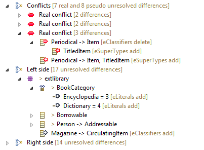
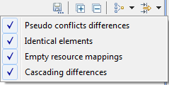
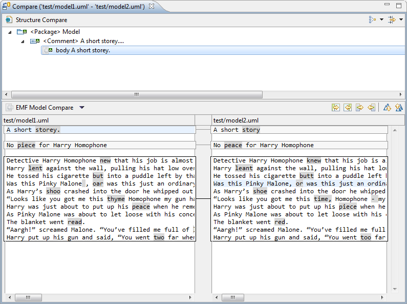
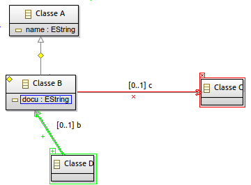
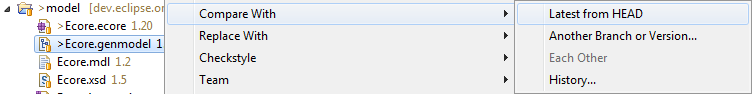
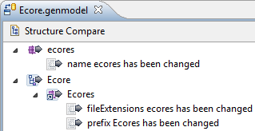

PENDING
This feature allows you to group differences together in the structural view according to a set predicate. By default, EMF Compare provides three distinct grouping strategies :



PENDING UPDATE, this is a demo displaying EMF Compare 1.3 Demo
PENDING : New grouping strategies can be provided to EMF Compare through extension points.
This features allows you to filter differences out of the structural view according to a set predicate. By default, EMF Compare provides five distinct filters :

PENDING UPDATE, this is a demo displaying EMF Compare 1.3 Demo
PENDING : New filters can be provided to EMF Compare through extension points.
Differences made into String-typed attributes can be compared and merged directly as text from the compare interface through a simple right-click on the difference.

PENDING UPDATE, this demo displays EMF Compare 1.3 Demo
PENDING UPDATE
Since the 1.2 release EMF compare provides the ability to compare models with graphical modelers.
Have a look on the following demos :
Demo : Comparing Ecore files with diagrams
Demo : Comparing UML files with diagrams

EMF Compare does not act simply on the selected files, but on their whole logical model (a given model can be split through multiple files through EMF control action). Thanks to that, if you try and compare a model file that reference other model files, the comparison will still be able to take these "other" files into account. For example, if you try and compare a genmodel file (that depends on its underlying ecore file) :

EMF Compare will actually consider both files when comparing :

PENDING UPDATE Demo
PENDING
Demo : Specific support to encapsulate profiles and stereotypes diffs